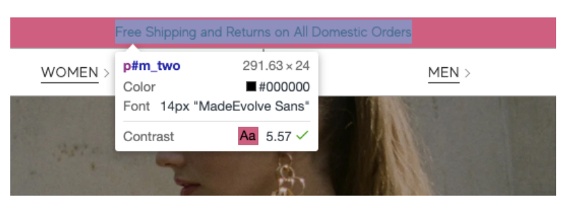
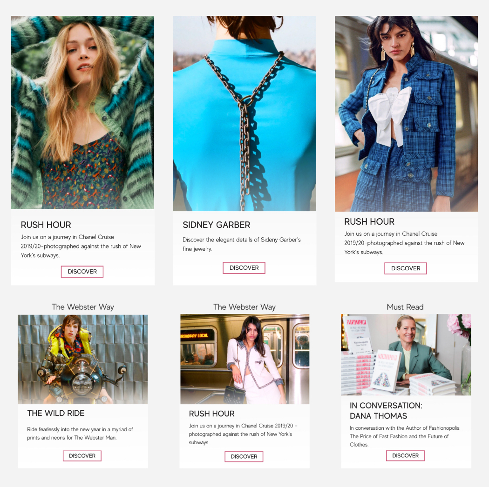

The Webster is a high fashion design shop with a website that needed improvement. I was asked to discover most issues of a view in their mobile version and offer solutions through design.
I focused on the Home page since it is the first page customers interact with and it only takes 5 seconds to give a good impression.
As an e-commerce business, their goal is to render an intuitive and smooth buying experience, or else, they are losing potential customers and sales.
Issue #1:
At the top of the page the header banner had poor readability and it's Contrast Ratio was 3.77 which is really poor and it was displaying a warning. (I tested it on Chrome Extension and Hexnaw website)
Solutions:
To change the text color from #FFF to #000 and it immediately increases the contrast ratio to 5.57.
To improve even more the contrast ratio, to change the background color from their primary color #CEF580 to #FFB6B9 (similar to the color they use in their menu, chat icon and the banner of their physical store) Left the primary color for the CTA’s.
Issue #2:
In desktop all store categories are shown but, in mobile devices the only categories shown are Women & Men.
This decreases potential sales since most people do not realize they also offer Home and Kids products.
People get confused with the two categories on the top and the two Women and Man Call-to-Actions in the section below.
Solutions:
To Show all categories to inform user or to not show any of them and let users discover them accessing the Menu.
Issue #3:
Header's text is on top of the Hero Image and it's provoking:
- Poor readability.
- Contrast Ratio Issues
- Some Images are disrupted by the text
- CTA’s don’t look like buttons
- Recurring Issue in Several pages
Solutions:
To Show all categories to inform user or to not show any of them and let users discover them accessing the Menu.
Issue #4:
Favorite products are difficult to recognize. Liked products icon only changes border color and this can be really difficult to perceive, specially for people with visibility problems.
Solutions:
Filled heart icon when a favorite item is selected. This is a recognized and established icon
Issue #5:
Difficulty to recognize what text belongs to every section since sections have almost the same negative space between the text and the images above and below.
Solutions:
To create a card with opacity that allows to view the photos and texts and can be reused in all pages and clearly defined CTA’s. These are very easy to code components.
Issue #6:
The Footer is bigger than most phone’s screen size. It was tested with the iPhone 11 Pro Max which has the iPhone's the biggest screen.
It presents too much information and it seems cluttered
The text is aligned in the centered which makes it more difficult to read
Subscription to Mailing List is located at the Bottom. This decreases the possibility of potential subscriptions since user's are less likely to write personal data after reading too much boring information.
Links like Privacy Policy and Cookie Policy difficult to recognized.
Solutions:
Better organized footer
Mailing List Subscription moved at the beginning to improve visibility and subscriptions
Text aligned to the left to increase readability and visual organization.
Links like Privacy Policy and Cookie Policy are stronger to be easily recognized.